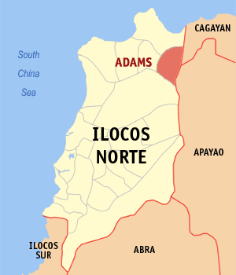

|

|
Adams is located in the northern part of the province. It is bordered by Pagudpud in the north, by Santa Praxedes, Cagayan in the northeast, Calanasan, Apayao in the east, Dumalneg in the west and Vintar in the south.
Road access to the municipality is mainly from Barangay Pancian in Pagudpud and used to be only accessible to motorcycles. Improvements to the road and new concrete bridges built by the provincial government of Ilocos Norte made the town accessible to all vehicles as of 2020, with plans to convert the provincial road into a national highway under the Department of Public Works and Highways.[5]
Adams' villages are far from each other, with Sitio Bucarot as the farthest, located on the side of the mountain away from the población. It takes about three hours of hiking to get there.
|